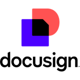

I’m someone who likes bringing structure to busy workflows, keeping records updated, tracking pending tasks, and making sure follow-ups don’t get overlooked. In my current role, I handle 40+ support requests daily, maintain documentation, monitor pending tasks, and follow up to ensure requests move toward completion. I’m looking to bring these skills to a remote role as a Virtual Assistant, Administrative Assistant, or Admin Project Coordinator.
My experience also includes maintaining spreadsheets and asset records, assisting with onboarding and offboarding, and creating step-by-step guides that make everyday processes easier to follow. I take pride in communicating clearly, staying organized, and making information easy to understand for both technical and non-technical users.
I’m familiar with Microsoft 365, Excel, Google Sheets, and collaboration tools such as Slack, Zoom, Asana, and Trello. I’m also comfortable learning new tools and adapting to different workflows. With my background in IT support, I bring a practical, problem-solving mindset, attention to detail, and the ability to stay composed when challenges arise.
Services
What I can offer, based on my existing skills and experience.
Administrative support
Document preparation, file organization, recordkeeping, and routine administrative tasks.
Data entry and spreadsheets
Data organization, spreadsheet updates, accuracy checks, and structured record maintenance.
Email and communication support
Organizing requests, drafting clear responses, tracking follow-ups, and keeping communication records.
Creating step-by-step guides, maintaining procedures, and organizing reference materials.
Back-office and operations support
Record maintenance, workflow tracking, information organization, and general operational assistance.
Skills and tools
Core skills
Administrative and back-office support
Data entry
Spreadsheet management
Document and file management
Recordkeeping
Task tracking and follow-up
Documentation and SOP writing
Email and written communication
Attention to detail
Time management
Problem-solving
Calendar and inbox management
Customer and user support
Request prioritization
Asset and inventory tracking
Remote collaboration
Used in my work
Microsoft Excel
Microsoft 365
Microsoft Teams
Google Workspace
Claude
ServiceNow
Familiar with
Slack
Zoom
Asana
Trello
Loom
Canva

DocuSign
Calendly
ChatGPT
Work experience
Desktop Support Engineer L1
EXL Service Philippines Inc., Pasay City. November 2025 to present
Handled 40+ requests per day by email, chat, and remote sessions while meeting response and resolution targets.
Logged, prioritized, and tracked every request in ServiceNow and followed up with users until closure.
Wrote step-by-step guides and knowledge articles that helped users solve common issues and reduced repeat requests.
Introduced a simple tracking sheet and reminder routine for open requests, reducing follow-up delays.
Kept accurate asset logs, inventory records, and handover documentation for onboarding, offboarding, and repairs.
Completed 540+ weekend activity projects, including moving laptops across the shop floor, deploying peripherals, installing applications, and reimaging laptops.
Supported onboarding and offboarding by preparing devices and workstations. Together with my earlier role, this brings my total to 850+ computers set up.
Explained technical steps in plain language and received positive feedback from users and managers for communication, reliability, and ownership.
IT Assistant
Gx International Inc., Muntinlupa City. February to May 2024
Prepared, organized, and updated spreadsheets, files, and records in Excel and Google Sheets with a focus on accuracy.
Set up workstations for new employees so they were ready from day one.
Installed and configured operating systems on more than 450 computers with a repeatable process, decreasing setup time by 30%.
Resolved hardware and software issues and carried out preventive maintenance to improve reliability.
Completed network cabling work (over 200 meters), improving internet stability by 25%, and set up office printers and scanners.
Education
Bachelor of Science in Information Technology, STI College Las Piñas. Graduated August 2024.
Work samples
These are demonstration projects I created for this portfolio. They use made-up data and are not client work.
Services & monthly packages
Proposed monthly packages for clients who want ongoing administrative support.
Monthly packages can be tailored to your business needs. Final scope, working hours, and deliverables will be agreed upon before starting. Prices are in USD.
How I work
Understand the task. Confirm what is needed and what a good result looks like.
Organize the information. Gather what I need and put it in one place.
Do the work. Use the right tool and follow the agreed process.
Check it. Review for accuracy and completeness before handing over.
Communicate. Document progress and share clear updates.
Follow through. Track open items until they are done.
Contact
Hiring for a remote administrative or virtual assistant role, or have tasks you would like supported? I would be glad to hear from you.